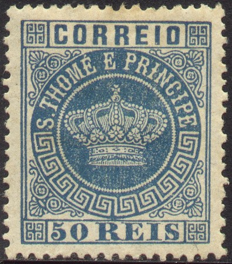
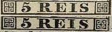
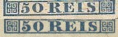
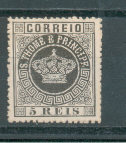
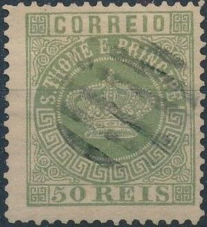
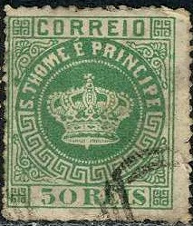
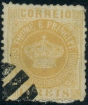

There might be reprints among the above stamps.
S. Tomé e Príncipe - St. Thomas und Prinzeninsel
Return To Catalogue - 1898 onwards and miscellaneous - Portugal
Note: on my website many of the
pictures can not be seen! They are of course present in the
catalogue;
contact me if you want to purchase the catalogue.

There might be reprints among the above stamps.
5 r black 10 r orange 10 r green (1881) 20 r brown 20 r red (1881) 25 r red 25 r lilac (1881) 40 r blue 40 r yellow (1881) 50 r green 50 r blue (1881) 100 r lilac 200 r orange 300 r brown
Value of the stamps |
|||
vc = very common c = common * = not so common ** = uncommon |
*** = very uncommon R = rare RR = very rare RRR = extremely rare |
||
| Value | Unused | Used | Remarks |
| 5 r | *** | *** | Two types: '5' different  |
| 10 r orange | R | R | Two types: '10' different |
| 10 r green | *** | *** | Two types: '10' different |
| 20 r brown | *** | *** | |
| 20 r red | *** | *** | |
| 25 r red | * | ** | |
| 25 r lilac | ** | ** | |
| 40 r blue | *** | *** | Two types: '40' different |
| 40 r lilac | R | R | |
| 50 r green | R | *** | Two types: '50' different, See 50 r blue |
| 50 r blue | * | ** | Two types: '50' different:  |
| 100 r | *** | *** | |
| 200 r | *** | *** | |
| 300 r | *** | *** | |
Surcharged with fancy letters (1902)


'115 REIS' on 50 r green '400 REIS' on 10 r orange
Value of the stamps |
|||
vc = very common c = common * = not so common ** = uncommon |
*** = very uncommon R = rare RR = very rare RRR = extremely rare |
||
| Value | Unused | Used | Remarks |
| 115 r on 50 r | *** | *** | Reprint: c (1905) |
| 400 r on 10 r | RR | RR | Reprint: c (1905) |
Surcharged with fancy letters and 'REPUBLICA' (1913)
(If anybody posesses a picture of these stamps, please contact me!)
'115 REIS' on 50 r green '400 REIS' on 10 r orange
Value of the stamps |
|||
vc = very common c = common * = not so common ** = uncommon |
*** = very uncommon R = rare RR = very rare RRR = extremely rare |
||
| Value | Unused | Used | Remarks |
| 115 r on 50 r | RR | RR | Broad or narrow 'REPUBLICA' overprint |
| 400 r on 10 r | RRR | RRR | |
Stamps in similar designs were issued for most Portuguese colonies (country name different for each country), click here for more information on this issue.


Some typical cancels

Two different sets of reprints were made, one set in 1885 (on white paper) and another set in 1905.
Fournier forgeries:
 

Fournier forgeries, I cannot find the 6-barred cancel in the
Fournier Album.
How to identify a Fournier forgery? The central circle with
the name "ST.THOME E PRINCIPE" is a little bigger than
in the genuine stamps. At the top it touches the line above it
quite much. In the genuine stamps it touches it very lightly or
not at all. The upper right ornament (besides the "N"
of "PRINCIPE") is not symmetric as the other ornaments.
For pictures of this click here.
These forgeries were offered by Fournier for 2 Swiss Francs for
the 1870 issue (9 values) and for 1 Swiss Franc for the 1881/85
issue (5 values). Some of these forgeries exist with a
"FAUX" overprint, they were taken from 'The Fournier
Album of Philatelic Forgeries'.
A website with more information can be found at:
http://www.tabacaria.org/Selos/Coroa2/STomeFournier.htm.
Cancels as listed in 'The Fournier Album of Philatelic Forgeries'
under St.Thomas and Prince, however, I believe only the central
cancel "SAO THOME 20 7 1875" was actually used on
forgeries of this country.
Other forgeries don't have an accent above the "E" of "THOME" or with an accent on the "E" following "THOME". Examples:
 
(Note the strange cancels on these Spiro forgeries!)
I've seen the following Spiro forgeries: 10 r orange, 20 r brown, 25 r red, 50 r green and 100r lilac. For more information concerning these forgeries, click here or see the following website: http://www.tabacaria.org/Selos/Coroa2/STomeSpiro3.htm.
There exist another Spiro forgery, with the corner ornaments as swastika's. At the following website an example of such a 5 r forgery can be found: http://www.tabacaria.org/Selos/Coroa2/STomeSpiro5reis.htm. Other example:
Spiro forgery with swastika's. The '5' is placed very far to the
right. I've also seen it cancelled with paralllel lines.
The next forgery has the word "CORREIO" different from the genuine stamps. The base of the crown seems smaller and more rounded. Also note the appearance of guide lines outside the design of the stamp.
The "5" is totally different from the two genuine
types, the "S" of "REIS" is placed too far to
the right. I've also seen this particular forgery in 5 r red and
5 r green.

5 r black 10 r green 20 r red 25 r violet 40 r brown 50 r blue 100 r brown 200 r lilac 300 r orange
Value of the stamps |
|||
vc = very common c = common * = not so common ** = uncommon |
*** = very uncommon R = rare RR = very rare RRR = extremely rare |
||
| Value | Unused | Used | Remarks |
| 5 r | * | * | |
| 10 r | * | * | |
| 20 r | *** | ** | |
| 25 r | *** | ** | |
| 40 r | *** | *** | Reprint: c |
| 50 r | *** | * | |
| 100 r | *** | *** | Reprint: c |
| 200 r | R | R | Reprint: c |
| 300 r | R | R | Reprint: c |
Surcharged


'2 1/2 RS' (green) on 5 r black '2 1/2 rs' (green) on 5 r black '2 1/2 RS' on 10 r green '2 1/2 rs' (green or black) on 10 r green '2 1/2 RS' on 20 r red '2 1/2 rs' (green or black) on 20 r red '2 1/2 RS' (green) on 25 r lilac '2 1/2 rs' (green) on 25 r lilac '5 reis' on 10 r green '5 cinco reis' on 20 r red 'Rs 50' on 40 r brown
Value of the stamps |
|||
vc = very common c = common * = not so common ** = uncommon |
*** = very uncommon R = rare RR = very rare RRR = extremely rare |
||
| Value | Unused | Used | Remarks |
| '2 1/2 RS' on 5 r | RR | RR | |
| '2 1/2 rs' on 5 r | RR | RR | |
| '2 1/2 RS' on 10 r | RR | RR | |
| '2 1/2 rs' on 10 r | RR | RR | |
| '2 1/2 RS' on 20 r | RR | RR | |
| '2 1/2 rs' on 20 r | RR | RR | |
| '2 1/2 RS' on 25 r | RR | RR | |
| '2 1/2 rs' on 25 r | RR | RR | |
| 5 r on 10 r | RR | RR | Inverted surcharges exist |
| 5 r on 20 r | RR | RR | Inverted surcharges exist |
| 50 r on 40 r | RR | RR | Inverted surcharges exist |

I've been told that the above stamp has a forged overprint.
Surcharged with fancy letters (1902)
(Reduced sizes)
'65 REIS' on 20 r red '65 REIS' on 25 r violet '65 REIS' on 100 r brown '115 REIS' on 10 r green '115 REIS' on 300 r orange '130 REIS' (red) on 5 r black '130 REIS' on 200 r lilac '400 REIS' on 40 r brown '400 REIS' on 50 r blue
Value of the stamps |
|||
vc = very common c = common * = not so common ** = uncommon |
*** = very uncommon R = rare RR = very rare RRR = extremely rare |
||
| Value | Unused | Used | Remarks |
| 65 r on 20 r | *** | *** | |
| 65 r on 25 r | *** | *** | |
| 65 r on 100 r | *** | *** | Reprint: c |
| 115 r on 10 r | *** | *** | |
| 115 r on 300 r | *** | *** | |
| 130 r on 5 r | *** | *** | |
| 130 r on 200 r | *** | *** | |
| 400 r on 40 r | R | R | Reprint: c |
| 400 r on 50 r | R | R | Reprint: c |
Surcharged with fancy letters and "REPUBLICA" broad or narrow (1913)
(Narrow local "REPUBLICA" overprint)
(Broad "REPUBLICA" overprint, reduced size)
'115 REIS' on 10 r green '115 REIS' on 300 r orange '130 REIS' on 5 r black '130 REIS' on 200 r lilac '400 REIS' on 50 r blue
Value of the stamps |
|||
vc = very common c = common * = not so common ** = uncommon |
*** = very uncommon R = rare RR = very rare RRR = extremely rare |
||
| Value | Unused | Used | Remarks |
| 115 r on 10 r | *** | *** | Broad or narrow overprint |
| 115 r on 300 r | RR | RR | Black broad overprint (1913) |
| 115 r on 300 r | *** | *** | Red broad overprint (1915) |
| 130 r on 5 r | RR | RR | Black broad overprint |
| 130 r on 5 r | *** | *** | Red broad overprint (1915) |
| 130 r on 200 r | ** | ** | Red broad overprint (1915) |
| 400 r on 50 r | RR | RR | Broad or narrow overprint |
Reprints exist of some of the following stamps (value: c) and were made in 1905: 40 r brown, 100 r brown, 200 r lilac and 300 r orange, "65 REIS" on 100 r lilac, "400 REIS" on 40 r brown and "400 REIS" on 50 r blue.
2 1/2 r brown
Value of the stamps |
|||
vc = very common c = common * = not so common ** = uncommon |
*** = very uncommon R = rare RR = very rare RRR = extremely rare |
||
| Value | Unused | Used | Remarks |
| 2 1/2 r | * | * | |
Surcharged in blue "PROVISORIO" slanting (1899)
2 1/2 r brown
Value of the stamps |
|||
vc = very common c = common * = not so common ** = uncommon |
*** = very uncommon R = rare RR = very rare RRR = extremely rare |
||
| Value | Unused | Used | Remarks |
| 2 1/2 r | RR | *** | Exists with inverted overprint |
Surcharged with fancy letters (1902)
'400 REIS' on 2 1/2 r brown
Value of the stamps |
|||
vc = very common c = common * = not so common ** = uncommon |
*** = very uncommon R = rare RR = very rare RRR = extremely rare |
||
| Value | Unused | Used | Remarks |
| 400 r on 2 1/2 r | ** | ** | |
Overprinted "REPUBLICA" and surcharged with fancy letters (1913) '400 REIS' on 2 1/2 r brown
Value of the stamps |
|||
vc = very common c = common * = not so common ** = uncommon |
*** = very uncommon R = rare RR = very rare RRR = extremely rare |
||
| Value | Unused | Used | Remarks |
| 400 r on 2 1/2 r | *** | *** | |
Overprinted "Republica" and surcharged twice (1925)

'Republica 40 c.' on '400 REIS' on 2 1/2 r brown
Value of the stamps |
|||
vc = very common c = common * = not so common ** = uncommon |
*** = very uncommon R = rare RR = very rare RRR = extremely rare |
||
| Value | Unused | Used | Remarks |
| 40 c on 400 r on 2 1/2 r | * | * | |

5 r yellow 10 r lilac 15 r brown 20 r lilac 25 r green 50 r blue 75 r red 80 r green 100 r brown on yellow 150 r red on red 200 r blue on blue 300 r blue on red
Value of the stamps |
|||
vc = very common c = common * = not so common ** = uncommon |
*** = very uncommon R = rare RR = very rare RRR = extremely rare |
||
| Value | Unused | Used | Remarks |
| 5 r | * | * | |
| 10 r | ** | ** | |
| 15 r | *** | *** | |
| 20 r | *** | *** | |
| 25 r | ** | * | |
| 50 r | ** | * | |
| 75 r | *** | *** | |
| 80 r | *** | *** | |
| 100 r | *** | *** | |
| 150 r | *** | *** | |
| 200 r | R | R | |
| 300 r | R | R | |
Surcharged with fancy letters (1902)


(reduced size)
'65 REIS' on 5 r yellow '65 REIS' on 10 r lilac '65 REIS' on 15 r brown '65 REIS' on 20 r lilac '115 REIS' on 25 r green '115 REIS' on 150 r red on red '115 REIS' on 200 r blue on blue '130 REIS' on 75 r red '130 REIS' on 100 r brown on yellow '130 REIS' on 300 r blue on red '400 REIS' on 50 r blue '400 REIS' on 80 r green
Value of the stamps |
|||
vc = very common c = common * = not so common ** = uncommon |
*** = very uncommon R = rare RR = very rare RRR = extremely rare |
||
| Value | Unused | Used | Remarks |
| 65 r on 5 r | *** | *** | |
| 65 r on 10 r | *** | *** | |
| 65 r on 15 r | *** | *** | |
| 65 r on 20 r | *** | *** | |
| 115 r on 25 r | *** | *** | |
| 115 r on 150 r | *** | *** | |
| 115 r on 200 r | *** | *** | |
| 130 r on 75 r | *** | *** | |
| 130 r on 100 r | *** | *** | |
| 130 r on 300 r | *** | *** | |
| 400 r on 50 r | ** | ** | |
| 400 r on 80 r | ** | ** | |
Overprinted "REPUBLICA" (3 types) and surcharged with fancy letters (1913 and 1920)

(Reduced sizes, "REPUBLICA" thin and slanting)
'115 REIS' on 25 r green '115 REIS' on 150 r red on red '115 REIS' on 200 r blue on blue '130 REIS' on 75 r red '130 REIS' on 100 r brown on yellow '130 REIS' on 300 r blue on red '400 REIS' on 50 r blue '400 REIS' on 80 r green
Value of the stamps |
|||
vc = very common c = common * = not so common ** = uncommon |
*** = very uncommon R = rare RR = very rare RRR = extremely rare |
||
| Value | Unused | Used | Remarks |
| 115 r on 25 r | *** | *** | 'REPUBLICA' narrow |
| 115 r on 25 r | * | * | 'REPUBLICA' broad, red or black |
| 115 r on 25 r | * | * | 'REPUBLICA' thin and slanting in red, 1920 |
| 115 r on 150 r | *** | *** | 'REPUBLICA' narrow |
| 115 r on 150 r | *** | *** | 'REPUBLICA' broad (black, 1913) |
| 115 r on 150 r | * | * | 'REPUBLICA' broad (red or blue, 1915) |
| 115 r on 200 r | *** | *** | 'REPUBLICA' narrow |
| 115 r on 200 r | *** | *** | 'REPUBLICA' broad (black, 1913) |
| 115 r on 200 r | * | * | 'REPUBLICA' broad (red, 1915) |
| 115 r on 200 r | ** | ** | 'REPUBLICA' thin and slanting in red, 1920 |
| 130 r on 75 r | *** | *** | 'REPUBLICA' in black, broad or narrow |
| 130 r on 75 r | * | * | 'REPUBLICA' broad (red) |
| 130 r on 75 r | *** | *** | 'REPUBLICA' thin and slanting in green, 1920 |
| 130 r on 100 r | RR | RR | 'REPUBLICA' broad (black, 1913) |
| 130 r on 100 r | * | * | 'REPUBLICA' broad (red, 1915) |
| 130 r on 300 r | * | * | 'REPUBILCA' broad (red, 1915) |
| 400 r on 50 r | *** | *** | 'REPUBLICA' broad or narrow |
| 400 r on 80 r | *** | *** | 'REPUBLICA' broad or narrow |
Overprinted 'REPUBLICA' and surcharged twice (1923)


'DEZ CENTAVOS' (blue or red) on '115 REIS' on 25 r green 'DEZ CENTAVOS' (blue) on '115 REIS' on 150 r red on red 'DEZ CENTAVOS' (blue) on '115 REIS' on 200 r blue on blue 'DEZ CENTAVOS' (red) on '130 REIS' on 75 r red 'DEZ CENTAVOS' (blue) on '130 REIS' on 100 r brown on yellow 'DEZ CENTAVOS' (blue) on '130 REIS' on 300 r blue on red
Value of the stamps |
|||
vc = very common c = common * = not so common ** = uncommon |
*** = very uncommon R = rare RR = very rare RRR = extremely rare |
||
| Value | Unused | Used | Remarks |
| 10 c on 115 r on 25 r | * | * | |
| 10 c on 115 r on 150 r | * | * | |
| 10 c on 115 r on 200 r | * | * | |
| 10 c on 130 r on 75 r | * | * | |
| 10 c on 130 r on 100 r | * | * | |
| 10 c on 130 r on 300 r | * | * | |
Overprinted "Republica" and surcharged twice (1925)

'Republica 40 c' on '400 REIS' on 80 r green
Value of the stamps |
|||
vc = very common c = common * = not so common ** = uncommon |
*** = very uncommon R = rare RR = very rare RRR = extremely rare |
||
| Value | Unused | Used | Remarks |
| 40 c on 400 r on 80 r | * | * | |
St Thomas and Prince 1898 onwards and miscellaneous

{kind=link}
{kind=link}
{kind=link}
{kind=link}
{kind=link}